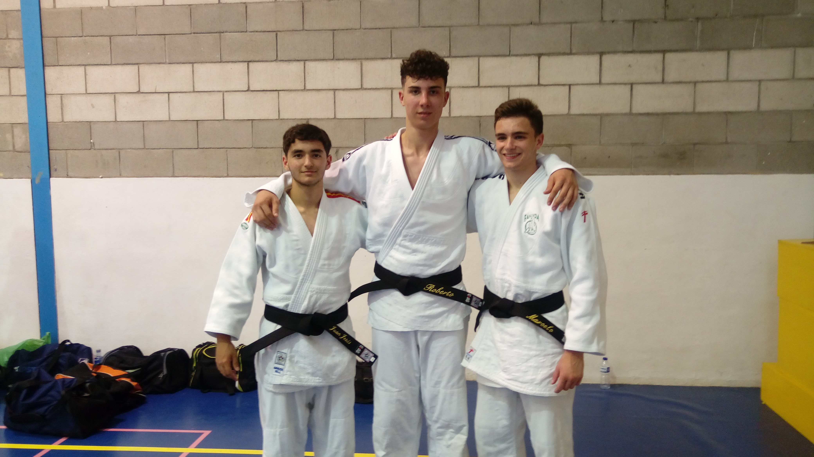

Además de lo útil que puede ser como método de defensa personal, el KARATE es uno de los deportes más completos que se pueden practicar y que aportan al individuo mayores beneficios desde el punto de vista fisiológico u psicológico. El KARATE potencia la autoestima, la autoconfianza, da seguridad y autoafirmación, incrementa la capacidad de afrontar el estrés, y mejora del funcionamiento y la organización cerebral.
Puede practicarlo cualquier persona sin importar edad y sexo . Ya que se adapta a las limitaciones del que lo practica. En edades infantiles y juveniles la práctica del KARATE es un complemento ideal para obtener un desarrollo psicomotor equilibrado que repercutirá en las capacidades del sujeto en su futura edad adulta, además de potenciar importantísimos aspectos de la personalidad y valores claves para el bienestar en una sociedad como la actual.
Comenzamos nuestras clases en el antiguo gimnasio Power Gym en sistema de prueba a finales de noviembre de 2002 y comprobando la buena armonía que se creó con los primeros alumnos confirmamos la fecha del nacimiento de Fudoshin, el 19 de diciembre del mismo año. Aprovechando que mis hijos ya tenían un nivel, participamos en una competición interclubs de Katas con un inmejorable resultado: 2º y 3º respectivamente. Así seguimos evolucionando y obteniendo buenos resultados en diferentes competiciones, como 1º y 2º en categoría juvenil en una de ellas. En el 2003, creamos nuestro examen anual de pase de grado (Kyu), haciendo de ello un evento especial para los alumnos, con tribunal incluido.
En el campeonato provincial de 2004 se obtuvieron 3 primeros puestos: Adulto femenino, Juvenil y Alevín. Las convocatorias de pases de grado se organizan coincidiendo con los respectivos aniversarios de los clubs organizadores y así creamos nuestro primer Trofeo Fudoshin de Katas para celebrar nuestro 2º aniversario. Fue un evento casi tan numeroso como el propio provincial, con 80 competidores y 7 clubs participantes, obteniendo 5 trofeos: 1º y 2º en alevín, 3º en juvenil, 2º en adultos femenino y 4º en adultos masculino. También participamos en diferentes eventos organizados por nosotros y también por la Unión Shito-Ryu España (Organización a la cual pertenecemos), como festivales infantiles, cursos de kárate y kobudo (como el del 11 de junio de 2004, en el cual se pudo contar con la presencia del gran maestro Genzo Iwata, director técnico de la Unión Internacional Shito-Kai Japón, a la cual también pertenecemos).
